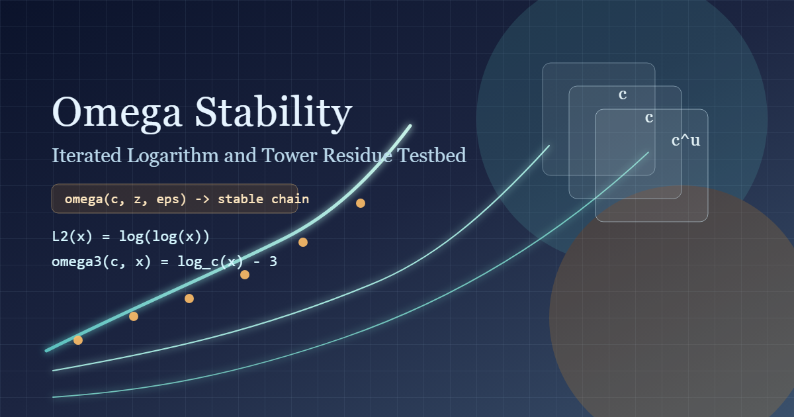

Ramanujan modulo 23
In characteristic 23, (1 − qn)23 = 1 − q23n. One factorization turns Δ into a simpler product.
Read the coefficient proofcomputational number theory · one long obsession
An open research project exploring prime pairs, Collatz dynamics, recursive towers and mathematical intelligence. Ideas grow through exact arguments, computational experiments and connections across fields.
prime-pair geometry · recursive dynamics · hibernating lemmas

NEW · THE RESEARCH ATLASFollow a spark.In characteristic 23, (1 − qn)23 = 1 − q23n. One factorization turns Δ into a simpler product.
Read the coefficient proofTwo signed polynomials divide the energy between them. |Pj|² + |Qj|² = 2j+1 on |z| = 1.
Read the circle argumentThe 210-wheel products reconstruct ζ(s) with four factors removed, for Re(s) > 1.
Read the partitioningFor xn+1 = exp(xn/e), starting at 1, the distance to e is asymptotic to 2e/n.
Read the endpoint proofZ(n) = 2 + π/n + π²/(2n²) + O(n−3). The leading terms give Prime Polarity a baseline.
Read the expansion∑n≥1 χ4(n)e−nt = 1/(2 cosh t) for t > 0. Its Mellin integral at s = 2 gives Catalan’s constant.
Read the kernel storyHome · the evidence board
Every finding is filed by two answers: what a test said, and what turned out to be true. The strongest cell comes first.
The test said yes and a written proof agrees. Three exact identities so far.
The tower phase limits and finite prime-pair counts provide concrete computational observations. Each experiment keeps its method and range visible. Evidence strength is assessed separately; this view does not assign a probability of truth.
Explore prime-pair geometry →Explore alternating towers →A place for candidates a method may have missed. No verified false-negative cases are recorded here yet. Future entries will explain the original test, why it missed the result and the evidence supporting reconsideration.
0 entries · open for the first oneThe test said yes and the truth said no. Counterexamples and limits help locate where a statement applies. The Möbius identity remains valid; the counterexample concerns its converse.
A positive Möbius value detects squarefreeness and an even number of prime factors. It cannot certify exactly two.
Exact · counterexampleTake m = 34. Then m − 1 = 33 = 3 × 11 and m + 1 = 35 = 5 × 7. Thus m² − 1 = 1155 = 3 × 5 × 7 × 11, so μ(1155) = 1; also μ(1156) = μ(34²) = 0. The adjacent (+1, 0) occurs without twin primes. This is the smallest such m; the next are 56, 86, 92, 94 and 104.
Scale check: for m below 200,000 the pattern μ(m² − 1) = +1 appears at 2,160 twin centres and at 30,215 non-twin centres. The filter mostly catches four-prime and six-prime products.
The precise repair is treasure 004: count the prime factors with multiplicity and require exactly two.
Lean status: formalization pending; no machine-checked proof claimed.
The Brun crossing matches a reference value by tuning the base; it does not establish a new dynamical transition. Recamán’s main visualization is paused. The finite-horizon follow-up is in Buried Chat Stories.
positive · positive · established results · Pirates Bary · treasures encapsulated :-D
Small treasures. Long awakenings. A pirate’s chest of exact identities rescued from our larger obsessions — one little treasure at a time.
If p and p + 2 are prime, their product sits exactly one step before a square. Every twin pair leaves an adjacent (+1, 0) in the Möbius sequence.
Exact · elementary proofThe primes p and p + 2 are distinct. Their product is squarefree with two prime factors, so μ(p(p + 2)) = (−1)² = 1. Since p + 1 > 1, its square has a square divisor, giving μ((p + 1)²) = 0. Finally, p(p + 2) + 1 = (p + 1)².
Specimen: 5 × 7 = 35, followed by 36; μ(35) = 1 and μ(36) = 0.
This implication is one-way: treasure 003 shows the same pattern without twin primes, and treasure 004 gives the exact two-way test.
Lean status: formalization pending; no machine-checked proof claimed.
For odd primes p ≤ q, set m = (p + q)/2 and d = (q − p)/2. Goldbach fixes the centre m. Twin primes fix d = 1.
Exact · algebraic identityBoth m and d are integers because p and q are odd. Expanding (m − d)(m + d) gives m² − d². Hence p + q = 2m and q − p = 2d.
For p ≠ q, μ(pq) = 1. On the Goldbach diagonal p = q, d = 0 and μ(p²) = 0. Repeated-prime representations remain valid Goldbach representations; 2 + 2 is handled separately.
Specimen: 10 = 3 + 7 has m = 5, d = 2 and pq = 25 − 4 = 21.
The identity connects coordinates; existence of a prime pair at every centre remains a separate question.
Lean status: formalization pending; no machine-checked proof claimed.
For m ≥ 3, the neighbours of m are twin primes exactly when m² − 1 has two prime factors counted with multiplicity. This is the two-way version of treasure 001.
Exact · elementary proofWrite m² − 1 = (m − 1)(m + 1). For m ≥ 3 both factors are at least 2, so each contributes at least one prime factor and Ω(m² − 1) = Ω(m − 1) + Ω(m + 1) ≥ 2. Equality forces Ω(m − 1) = Ω(m + 1) = 1, so both are prime. Conversely, two primes give Ω = 2.
Squarefreeness comes free: m − 1 ≠ m + 1, so the product of the two primes is squarefree and μ(m² − 1) = +1, recovering treasure 001.
Specimens: m = 12 gives 143 = 11 × 13 and m = 18 gives 323 = 17 × 19, both twin centres with Ω = 2. m = 34 gives 1155 with Ω = 4 and is rejected.
Away from squares: for distinct primes p, q the pair (μ(pq), μ(pq + 1)) equals (+1, 0) exactly when pq + 1 has a square divisor. Twins supply one, since pq + 1 = (p + 1)². They are not required: 3 × 13 = 39 and 40 = 2³ × 5.
The test restates the twin-prime condition; it does not show that it holds infinitely often.
Finite check: verified for 3 ≤ m < 200,000 by lemmas/verify_lemmas.py. Lean status: formalization pending; no machine-checked proof claimed.
Proof dispatches · the first chest is open
Follow the repository for updates, or subscribe to its Atom commit feed in a feed reader. Future Lean certificates should include source, toolchain and a successful check. Dedicated proof-only messaging is still to come.
Watch on GitHub ↗ Statements and proofs ↗ Finite check script ↗ Atom updates ↗Established elementary results with written proofs; Lean verification pending. These local identities do not imply prime-pair existence at every scale.
next steps · goldbach p + q roadmap
Goldbach and twin primes both count two linear forms that are prime at once. Goldbach reflects around N/2; twins translate by 2. With a(n) = 1 for prime n and 0 otherwise, and PX(z) the sum of zp over primes p ≤ X, both counts are coefficients built from the same polynomial.
Ordered prime pairs with p + q = N. Required: G(N) > 0 for every even N ≥ 4.
Exact identityPrimes n ≤ X with n + 2 prime. Required: T(X) grows without bound.
Exact identityIn the coordinates of treasure 002, reflection fixes the centre m and translation fixes the half-gap d = 1.
The prime-polynomial identities. State and check the two coefficient identities above. They are finite, algebraic and tractable in Lean.
The inversion expansion. Möbius inversion turns prime-power detection into signed divisor sums:
Substituted into R(N) = Σ Λ(n)·Λ(N − n), it gives two coupled Möbius sums with constraints d | n and e | N − n. R(N) also counts prime powers, so a proof has to remove that contribution.
The missing correlation bound. The target is a main term that beats the error:
for all sufficiently large even N, followed by finite verification below the threshold. Our Mertens work studies cancellation in a single sum of μ(n); Goldbach needs cancellation after coupling two arithmetic positions. Control of the single sum does not supply the coupled one, and sieve methods meet the parity obstruction here.
Where our constructions could earn a role. Sign-flipping towers: propose a model for the signed cancellation error, then prove the model bounds the arithmetic error. Collatz flights: methods for separating approximate balance from exact admissibility. Brun and repunits: comparison sequences and weighting experiments. A tower or attractor becomes useful when it yields the uniform error bound in step 03; matching a limiting constant does not.
Two names without a pinned definition. Our “Bernoulli limit” and “trivial inversion theorem” are not yet written down exactly. Neither is identified with a standard theorem, and neither is used above, until its definition is recovered.
G(N) counts ordered pairs; the Goldbach tab counts unordered pairs. Notes and check script: lemmas/ROADMAP.md · lemmas/verify_roadmap.py. Background: the parity problem in sieve theory · DLMF §27.5.
goldbach · prime-pair geometry
Explore how an even number N splits into two primes. Each point represents an even N from 4 to 2,600; its size encodes the number of unordered prime pairs. Colour and position organize divisibility patterns and remainders modulo 30. The cones, rings and twists are designed visual coordinates, inviting comparison across arithmetic families. Drag to rotate.
collatz · delay embedding
Plot every Collatz value against the next — a delay embedding at lag τ=1. Thousands of orbits collapse onto two rails: the halving branch (÷2) and the tripling branch (3n+1). The whole conjecture is a walk hopping between them.
EncapsulatorP · recursive cinema · study 01
An integer spine inside a changing complex landscape. Orbit filaments, mirrored chambers and neural-like crossings: five views of a mathematical transformation. Drag to explore; scroll to zoom.
Colour combines finite escape time and proximity to orbit traps; dark regions mean no escape within the iteration limit, not proven boundedness. Orbifold, neural and quasiparticle names describe visual studies. No trained neural network or physical particle simulation is running.
The base entire extension agrees with the standard Collatz step on nonnegative integers.
Added sine terms vanish at every integer in exact mathematics. Complex dynamics can change while the integer rule stays fixed.
The orbifold lens folds the displayed plane into six sectors. The particle field traces screen-space paths through the image. Neither establishes the Collatz conjecture.
Further research · Goldbach atomic axis
Place each odd prime pair on its centre m = (p + q)/2 and half-gap d = (q − p)/2. Goldbach fixes m; twin primes occupy d = 1. The product pq = m² − d² supplies the exact arithmetic foundation.
Proposed next interaction: paired sign-flipping tower phases driven by m and d, with targets chosen before tuning. “Atomic axis” is our visualization coordinate; “dagger” denotes an alternating-sign tower. The coupling is a research proposal, not an established prime-detection method.
towers · sign-flipping power towers
The sign is part of every exponent level — a forced + / − / + / − architecture, not an ordinary tetration cycle.
The signs are imposed level by level.
At base 1.11 the limits settle on opposite sides of 1.
Upper excess above 1 compared with 2 − B₂.
validatron · specialized mathematical intelligence
Validatron is being developed to connect our mathematical research with specialized open-weight models and complementary language models. Its purpose is to understand an idea on its own terms, explore connections, develop arguments and help turn promising steps into precise results.
The planned Hugging Face pipeline compares the original gpt-oss-120b with separate Validatron and AndrosAIS adaptations, alongside selected paid models. Each adaptation keeps its own objectives. Checkpoints, adaptation methods and evaluation results will document what changes.
In developmentPrime–transcendental relationships, sign-flipping towers, Catalan–Ruelle structures, Collatz dynamics and Goldbach prime pairs form the research agenda. Evaluation asks whether a model preserves definitions, proposes useful connections and develops sound arguments. Numerical experiments and formal proof checks contribute where appropriate.
Research directionThe model adaptations and benchmark are planned work. Published runs will link their exact models, inputs and outcomes. This page does not execute model evaluation.
EncapsulatorP · research atlas
Towers, prime pairs and unexpected connections. Pick a thread and explore.
A thread across iterated logarithms, alternating towers and prime-layer order. Recovered from five or six connected conversations, including a shared branch.
Enter the Ω threadResponse, order and fixed-point structure connect distinct systems in this synthesis. For the p = 5, q = 7 Ω composition, the local multiplier is approximately 1.007355, so that fixed point is repelling. The historical cover title names the thread; each model has its own stability analysis.
Written proofs · Lean checks pending
A small working table
Three constructions you can vary, with every rule visible.
Fix an even sum N. Each unordered prime pair becomes a point at half-gap d, with product pq = (N/2)² − d².
p + q = N · p ≤ q
m = N/2 · d = (q − p)/2
Horizontal: half-gap d. Vertical: product pq. The curve is the coordinate identity; the points are prime pairs.
Vary the positive base c. The lower and upper phases meet through u = c−v and v = cu.
vk+1 = c(c−vk)
v0 = 1 · 80 iterations
Lower phase Upper phase. Values are numerical approximations; the iteration residual is shown beside the control.
Because 210 = 2 × 3 × 5 × 7, removing their multiples leaves φ(210) = 48 admissible remainders. Every prime above 7 lies on one of these lanes.
gcd(r, 210) = 1
Remove multiples of
A surviving lane can contain composites: 121 and 169 both survive all four filters. The wheel organizes candidates.
Survives the selected filters Divisible by a selected factor
The collection
A curated recovery from available conversations and source files.
A different route
Try a shorter phrase, another family, or all evidence levels.
The people, the models, the continuing notebook
Signed for this atlas edition
ChatGPT
GPT-6 Astra Pro
Recovery, mathematical checks, writing and interactive atlas implementation.
For the questions worth keeping, and the arguments worth finishing.
Research direction & original explorations
Zolton aka Inge
EncapsulatorP
The questions, the experiments, and the thread connecting the conversations.
Credit stays attached to the work that brought us here.
Collatz Metamorphoses carries this signature in its interactive visual and exported image.
Open the signed visualThe signed Buried Chat Stories note accompanies the Ω series, Collatz reversal, bubble tube and XO₂.
Read the signed notePrime Forms constructions, calculations, drawings and integration. Codex also signs The Order of Waves and edits Buried Chat Stories.
Prime Forms authorshipPrime Forms’ white page and blue plates, lattice relief, spectral read-back, Omega drawing and assembly.
Prime Forms authorshipThe Living SPEC workspace, neon visual study, RG lattice, model checks and experimental lab sections.
Prime Forms authorshipThe Prime Forms visual layout and the helper that exports current settings and live checks as a specification.
Read the original creditEarlier contributors are credited here from their surviving work. If an earlier version contributes again, its own dated note and signature can join this page.
Recorded names and signatures are preserved as written in their sources. “Neo” and “Gemini (Neon)” remain separate source credits. Earlier model versions are named only where the source identifies them. The signature above belongs to this atlas edition; each research entry keeps its own evidence level and original source trail.
the archive
Buried Chat Stories collects the ideas and experiments that began in conversation.
Specialized model adaptation, comparative evaluation and mathematical exploration. Validatron is being developed alongside the research projects below.
the claims
Stopping times as a stochastic recurrence; reads off the heavy-tail exponent.
EmpiricalCross-examines Goldbach partition counts against Collatz orbit structure.
EmpiricalPushes the M(n)/√n boundary toward where Mertens is known to fail.
EmpiricalTransfer-operator machinery on Catalan-type exponent gaps.
TheoreticalA branch-controlled zeta transform feeding a finite geometric sum. The atlas gives its explicit kernel, branch conventions and next experiments.
TheoreticalTakes the τ=1 embedding of the Collatz tab down to a single orbit — n = 27, 111 updates / 112 visited vertices, peak 9,232 — and asks what counts the structure on the two rails. The two affine rails are exact. The extension to compact hulls and Rupert-admissible geometry is an exploratory question; the atlas separates the written unbounded-hull lemma from the proposed geometric implications.
ConjecturalAn early private research direction. A problem statement and supporting materials will accompany its public introduction.
Unlabeledreading the research
A mathematical statement supported by a proof, with assumptions and a source.
A reported computational observation within a stated range and method.
A proposed statement guiding further mathematical investigation.
Software and methods supporting exploration and evaluation.
An early direction whose scope and results are still being developed.
A year of EncapsulatorP research conversations, revisited through the calculations, experiments and questions they left behind.
Close a Beer–Lambert attenuation rule into the scalar loop x ↦ exp(−gx). At unit gain the steady value is the Omega constant. Change the gain to see where the fixed point loses linear stability.
Feedback. The positive fixed point solves gx exp(gx) = g, so x* = W(g)/g and the multiplier is −W(g). At g = 1 this gives Ω = W(1) ≈ 0.56714329. At g = e the slope is −1.
Prime layers. The pair 2 → 7 has multiplier ≈ 0.433844 at Ω, while 5 → 7 gives ≈ 1.007355. Reverse either pair and the slope survives, while the quadratic difference between the orders changes sign.
Tower remainder. The Omega Stability notebook measures a different quantity. It carries an output perturbation ε back through iterated logarithms, one layer at a time. That remainder belongs to the chosen tower and perturbation. Ω(n), the arithmetic count of prime factors with multiplicity, appears in Hibernating Lemmas.

One version of the hint put Riemann zeros upstream of Collatz collapse. Another tried to detect a failed orbit through a singularity. A stopping-time weight exposed a flaw in that second step. If τ(n) is infinite, exp(−βτ(n)) can be set to zero, and skipping that term supplies no automatic singularity.
For β > 0, the Dirichlet series with terms exp(−βτ(n))n−s converges absolutely for Re(s) > 1, even with infinite stopping times. Changing the weight at a single index changes the function by a constant times n−s, which is entire. Behavior farther left depends on the whole coefficient sequence.
Start instead with a known orbit and ask what analytic trace it leaves. On 1 → 4 → 2 → 1, the orbit potential ∑qk/Tk(1) has the exact form (1 + q/4 + q²/2)/(1 − q³). Multiplying by 1 − q and taking q ↑ 1 gives 7/12. Here the cycle produces the pole in an orbit generating function. Relating an orbit observable to the Riemann zeta function remains an open step.
Can something collapse sideways and still travel along an axis? The bubble-versals-tube conversation let those directions evolve separately. A bubble or geode provides a possible shape for that idea.
Transport toy. Use (r, ℓ) ↦ (0.7r, 1.15ℓ), starting at (1, 1). The radius contracts while the longitudinal scale grows. The original discussion suggested a branch selector driven by a compound Collatz state; the slider isolates the geometry with fixed factors.
The “Tao Green buble integral.” Damp the odd quarter-turn signs χ4(n) by exp(−nt). Their sum is 1/(2 cosh t). Its normalized Mellin integral gives β(s) for Re(s) > 1 and equals Catalan’s constant at s = 2. Restrict the sum at s = 2 to primes in a progression of step divisible by 4 and each term carries the same χ4 sign. The arithmetic construction leaves the transport picture as a model.
What happens at the upper endpoint of the real power tower? For x0 = 1 and xn+1 = exp(xn/e), the fixed point e has slope one. The distance to e decays like 2e/n.
For x < e, the graph of exp(x/e) lies strictly above its tangent y = x and below e, so the iterates rise to e. With δn = e − xn, Taylor expansion gives δn+1 = δn − δn2/(2e) + O(δn3). The increments of 1/δn tend to 1/(2e), giving the rate. The argument concerns this endpoint and a starting value below e.
The upper fixed point of bb−x at b = 1.11 is about 1.09753407. Its excess over one is about 0.00030535 below the Brun deficit 2 − B2.
Shifting the base to about 1.1103955 makes the deficit match numerically. The branch position moves continuously with the base near the crossing. The useful follow-up is to fix the base-selection rule ahead of time and compare the closeness against other preselected targets.
A June note put a complex phase in the exponent of an integral. For |a| = 1, ∫01 u−au du = ∑n≥1 an−1/nn. The familiar value ≈ 1.291286 appears anywhere the phase returns to 1.
Expand exp(−a u log u). The expansion can be integrated term by term since |u log u| ≤ 1/e on [0,1]. The substitution u = exp(−t) gives ∫01(−u log u)k du = k!/(k + 1)k+1. The original phase was a = exp(2πiα(x² − y + 1)), giving the value at phase returns α(x² − y + 1) ∈ ℤ.
Remove the primes 2, 3, 5 and 7, and the remaining prime factors split among the 48 coprime remainders modulo 210. For Re(s) > 1, multiplying the 48 class products reconstructs ζ(s) with those four Euler factors removed.
Define Pr(s) = ∏p ≡ r (mod 210)(1 − p−s)−1. Then ∏gcd(r,210)=1Pr(s) = ζ(s)∏p | 210(1 − p−s). Absolute convergence justifies regrouping. The wheel gives exact eligibility classes. Relative prime density and behavior beyond this half-plane need their own arguments.
On Goldbach’s power-of-two spine, set the centre m = 2k. For k ≥ 1 and both primes above 3, the half-gap d must be 3 modulo 6. The line d = 1 meets the spine only at the pair 3 and 5.
Parity forces d to be odd. Since m is nonzero modulo 3, either m − d or m + d is a multiple of 3 unless d = 0 modulo 3. At d = 1, the only admissible multiple of 3 is the prime 3 itself, which gives m = 4. The sieve leaves an open existence question at each admissible centre and an open infinitude question along the general twin-prime line.
Start the shortcut Collatz map at 2k − 1. After j steps the value is 3j2k−j − 1 for 0 ≤ j ≤ k. The orbit hands a string of ones to a power of three minus one.
Each input with j < k is odd, so the next step is (3x + 1)/2 and gives the formula with j replaced by j + 1. For k = 5 the first six values are 31, 47, 71, 107, 161, 242. The identity accounts for the initial odd run. The later stopping time depends on what happens from 3k − 1 onward.
A quarter-turn yields χ4(n) = sin(πn/2). Weighted by n−2, these signs sum to Catalan’s constant. The coordinate w = (s − 2)/(s + 1) puts s = 2 at the centre and Re(s) = ½ on the rim.
Weight the Gauss inverse branches x ↦ 1/(m + x) by χ4(m)(m + x)−s. Apply the operator once to 1 and evaluate at x = 0. For Re(s) > 1 the result is the defining series for the Dirichlet beta function. At s = 2 this recovers Catalan’s constant. The operator’s trace and Fredholm determinant are separate quantities.
Two prime layers Tp(x) = ΩpΩ−x can agree at Ω and share a slope while retaining different curvatures. Their half-difference gives a signed second harmonic for a small sinusoidal drive.
For input Ω + u, the leading term of (Tq∘Tp − Tp∘Tq)/2 is Ω² log(p) log(q) log(q/p)u²/4. Substituting u = A cos θ gives a mean and a cos(2θ) component at order A². Swap the layer order to reverse the sign, or double A for a fourfold change to leading order.
Counting prime factors in each decimal digit of c in m/s gives 122121213. A cap of two gives 122121212. Both differ at a single digit because 8 = 2³.
A different unit rewrites the coefficient and can change the prime letters or introduce a repeating decimal. The digit model uses those changes as inputs. An effect that follows the re-encoding is evidence about the representation. Any claim about optical behavior needs a separately specified physical observable.
Add a sin(πz) term to a complex Collatz extension. Every integer step survives exactly because the sine vanishes there, while off-integer orbits and zeros may move.
Compare a chosen family of coefficients and starting points at a fixed escape radius and iteration limit. A feature that changes across extensions belongs to the chosen lift. A robust geometric claim would need a quantitative feature and a stated class of perturbations under which it survives.
Pick a point, lift it to either square-root sheet, feed that value to ζ, then wrap the result in a three-term geometric sum. The two surfaces come from the same input plane.
The repository uses w = ζ(1.25 ± √z) and r = 1/(1 + exp(w)), then returns r + r² + r³ at the default parameters. For z = ¼, the ζ arguments become 7/4 and 3/4. The recorded outputs are about 0.140269 and 2.817643. Rotating the branch cut changes where a renderer switches sheets. The input z = 1/16 also puts the minus sheet at ζ’s pole, so it deserves a separate mask when comparing surfaces.
A reachable test asks whether values unvisited at step N remain unvisited at 2N. The earlier Grassmannian run at 20,000 steps had weak separation from shuffled labels, and its window rank matched the null.
Freeze the features at N, evaluate on out-of-time segments, and score tied predictions consistently. Report the prediction horizon with each result. An optical blockade is a separate comparison model whose correspondence with these arithmetic measurements remains conjectural.
The 210-wheel story started with admissible remainders. In the region Re(s) > 1, each prime belongs to one lane after removing 2, 3, 5 and 7, and each Euler factor comes along with it.
Write log Pr(s) = ∑p ≡ r ∑k≥1 p−ks/k. Exponentiating the sum of these analytic logs restores the product over all primes coprime to 210. Weighting the logs by Θ(r) instead defines a new function in that half-plane. Its continuation and zeros require separate work.
The root scans compared positive and negative indices. For a branch on a conjugation-invariant domain with H(z̄) = H(z)̄, putting Qk(z) = H(z) − 2πik gives Q−k(z̄) = Qk(z)̄.
A zero in the k-slice has a conjugate zero in the −k-slice, with the same multiplicity. That gives a check on the branch choice and the scan. A match between two finite clouds leaves the generating operator undetermined. A physical time reversal would require a state-space involution and a checked rule for how it reverses the evolution.
Reduce the discriminant series Δ(q) = q∏n≥1(1 − qn)24 coefficient by coefficient modulo 23. Its product becomes q∏n≥1(1 − qn)(1 − q23n).
In characteristic 23, raising 1 − qn to power 23 gives 1 − q23n. Leave the remaining factor unchanged. This is an identity of formal power series modulo 23. The plastic polynomial x³ − x − 1 has discriminant −23, which made 23 a natural place to compare the arithmetic. The product calculation uses only the coefficient ring.
In the recovered story, “Shapiro rings” meant the Rudin–Shapiro pair. Starting with P0 = Q0 = 1, set Pj+1 = Pj + z2ʲQj and Qj+1 = Pj − z2ʲQj. On |z| = 1 their squared magnitudes sum to 2j+1.
Apply |a + b|² + |a − b|² = 2(|a|² + |b|²), with b = z2ʲQj. On the circle the multiplier has modulus one, so each step doubles the total energy. An individual root can move away from the circle. Root-location claims need their own bounds or certificates.
The golden ratio solves x² = x + 1; the plastic constant solves x³ = x + 1. Reversing these polynomials gives the Fibonacci and Padovan generating denominators, 1 − z − z² and 1 − z² − z³.
With F0 = 0, F1 = 1, the Fibonacci generating function is z/(1 − z − z²). The Padovan sequence with its first three terms equal to 1 has generating function (1 + z)/(1 − z² − z³). In ℤ/5ℤ, 3 solves the golden equation and 2 solves the plastic equation. These are solutions in that ring; the positive real roots describe a different setting.
The Perrin sequence P0 = 3, P1 = 0, P2 = 2 with Pn = Pn−2 + Pn−3 satisfies Pp ≡ 0 (mod p) at every prime. The same test accepts 271441 = 521².
The Perrin terms are power sums of the roots of x³ − x − 1. Over a splitting field in characteristic p, Frobenius turns the sum of their p-th powers into the p-th power of their sum, which is zero. For the composite example, iterate the same three-term recurrence modulo 271441 up to index 271441. The final remainder is zero.
Extend Z to n > 2 through Z(n) = 1 + exp(πζ(n−1)/n). Then Z(n) = 2 + π/n + π²/(2n²) + O(n−3). The dominant change is a trend in the input n.
For large n, bound the terms from 2 onward with 21−n and the integral from 2 to infinity of x1−n. This gives ζ(n−1) = 1 + O(2−n). Taylor expansion of the exponential gives the stated terms. A primality experiment should compare against the n-trend before interpreting the residual.
The raw Z(n) decreases strictly for n > 2. On the same sample, its exact ranking is identical to the ranking by −n. A raw AUC inherits all the effects of that ordering and any density drift across the window.
Compare against the input-rank baseline. Evaluate on odd or coprime inputs, shuffle scores within matched remainder groups, preserve ties, and use disjoint forward windows. Möbius and prime-power transforms need a feature audit, because an arithmetic label can re-enter the experiment through the feature or the sample construction.
A minimum-distance setting forces neighboring detected peaks apart. A spacing deficit below that distance can therefore come from the detector, even when the underlying signal carries no such repulsion.
Replay the same window, sampling grid and peak detector on randomized controls. Keep the density normalization and detector settings fixed. Check that a difference persists across spacings and detector settings before fitting a random-matrix law. Fourier peaks from periodic truncation need their own control as well.
A κ³ experiment reported 0.5237429570121888, close to π/6 ≈ 0.5235987755982989. The displayed number and π/6 share the continued-fraction prefix [0; 1, 1, 10]. Their next coefficients are 33 and 10.
Repeatedly take the integer part, subtract it and invert the remainder. Doing this to the reported decimal and to π/6 shows the divergence and a numerical gap of about 0.00014418. An identity would need an exact definition of the reported value and an argument that explains it.
The largest prime factor and the number of prime factors, counted with multiplicity, give the same pair (3, 2) for 6 and 9. The positional tower needs more information if it is to recover every input digit.
Keep the valuation vector instead. Over the primes 2 and 3, the digit 6 has exponents (1, 1) and 9 has (0, 2). Unique factorization gives the reconstruction for positive integers. The special handling of 0 in a digit display remains a separate convention.
The recursive-depth toy model multiplies a gain profile by a stability profile. Unimodality of both factors is too weak to ensure a single maximum pattern in their product.
Take (1, 2, 3, 4, 5, 6, 5) and (5, 6, 2.8, 2.5, 2.4, 1, 0.9). Each rises to a single peak and then falls. Their product is (5, 12, 8.4, 10, 12, 6, 4.5), with two global maximizers at positions 2 and 5. For positive profiles, log-concavity gives a stronger route because the log of the product is the sum of the logs.
From Zolton’s EncapsulatorP research conversations. Edited for the atlas by Codex. The June θ and Möbius tower definitions and finite outputs have now been recovered and recomputed in the research atlas.